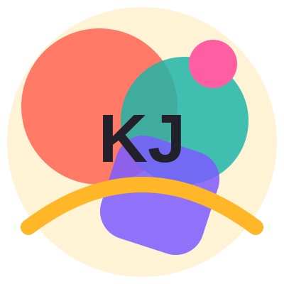

Kevin Julián, mecánica y software
Técnico en mecánica automotriz y estudiante de ingeniería de software. Mi objetivo es unir ambos mundos: vehículos y tecnología.
Contacto Ver experiencia
Lema personal
«Siempre busca la mejor versión de ti.»
Sobre mí
Elegí combinar la mecánica automotriz con el software por orientación de mi madre: estudiar algo que me apasionara, los automóviles, junto con un campo de gran demanda como la tecnología. Con el tiempo comprendí que ambas carreras convergen: los vehículos actuales incorporan computadoras y, por tanto, son programables.
Soy una persona activa y organizada; para mí, permanecer quieto es perder el tiempo. Aprendo de manera constante, y leo sobre todo para formarme: manuales técnicos, funcionamiento de los vehículos y creación de empresas.
De un vistazo
Trabajo
Auxiliar de taller en Autolince desde agosto de 2026.
Estudio
Técnico en mecánica automotriz (terminado) e ingeniería de software (cuarto semestre).
Programación
C, Java, Python, HTML, CSS y JavaScript.
Idiomas
Español nativo e inglés intermedio.
Habilidades
Intereses
- Ciclismo: lo practico desde los 7 u 8 años.
- Música: escucho de todo, principalmente reggaetón.
- Lectura: enfocada en el aprendizaje y el estudio.